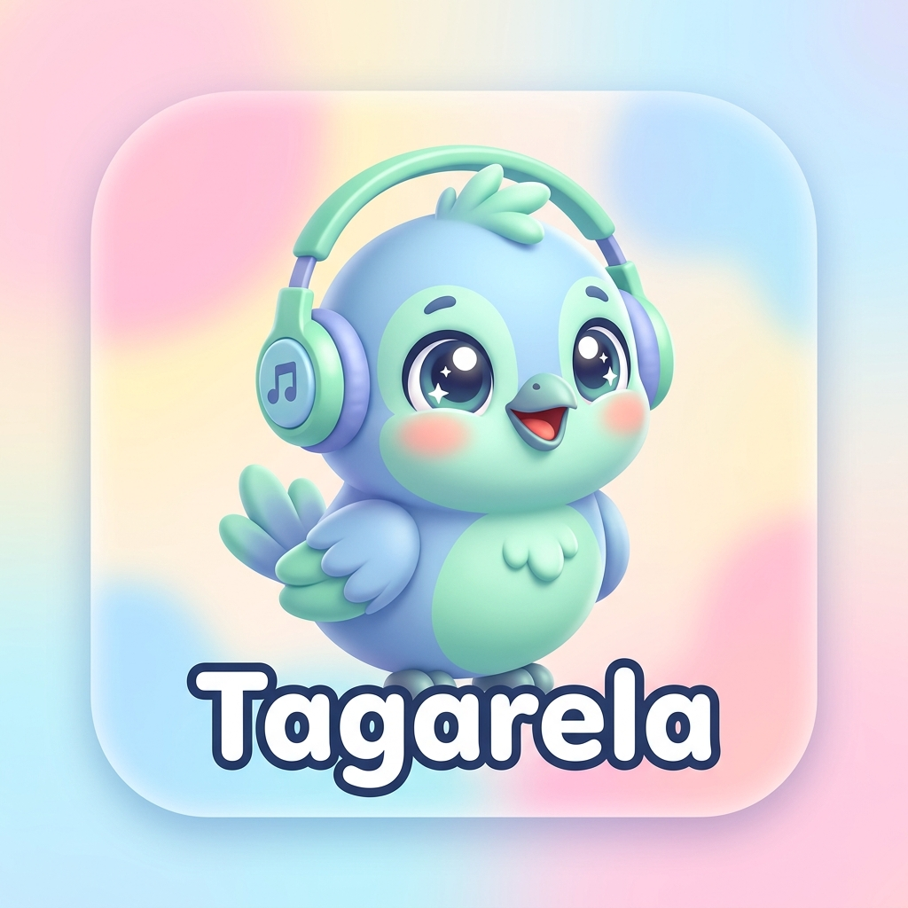

TagarelaSoftware Desktop para Windows com estímulos auditivos suaves, interface livre de gatilhos e painel de acompanhamento clínico para fonoaudiólogos e pais.
Desenvolvido sob orientação clínica para atender às necessidades neurodiversas de crianças no espectro autista (TEA).
O aplicativo roda em tela cheia protegida por senha dos pais (PIN), prevenindo cliques acidentais e saídas indesejadas para o sistema operacional.
Sem buzinas ou apitos agudos. Sons de vitória síntetizados em harmônicos senoidais suaves e orientações neutras de baixa frequência em caso de erro.
Acompanhe o tempo de sessão, frequência semanal de uso e evolução da taxa de acertos por fonema com gráficos gerados offline.
Faça o download do protótipo funcional para Windows (PC) e experimente localmente.
Instalador Executável Completo (.exe)
Tamanho: ~64.2 MB • Versão 1.0.0-PoC